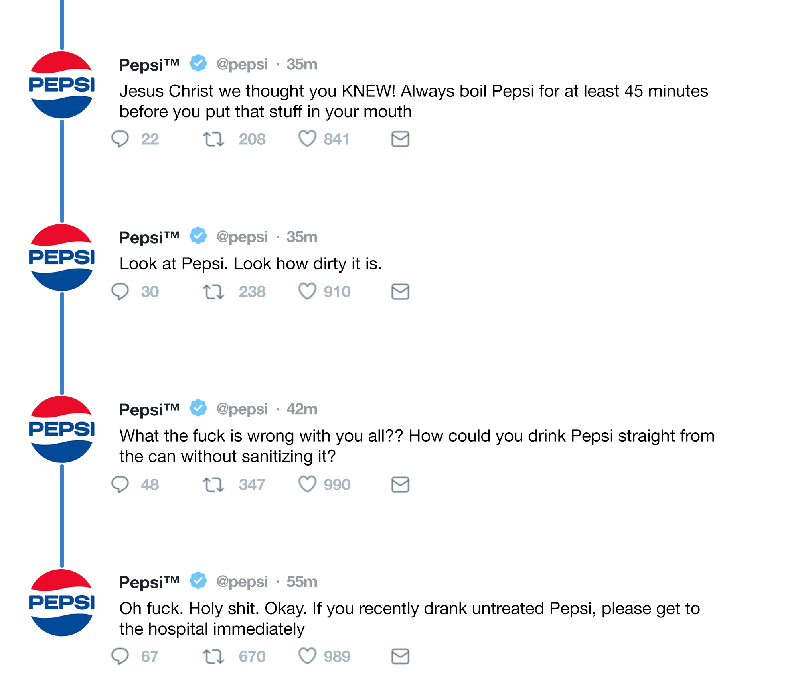

Pepsi's Fruit Juice Release: Looks like KO is on the UP & Up!
Uh oh, looks like Pepsi's been on the ole Dr. Pepper again...
Well looks like emilia and her kids ain't seeing the sun rise.

Damn, I want what Pepsi's on...
Time to Make a Juicy Environmental Non-Hazard...ISH!
This is more of a fun disaster, the kind where you chuck your kid into a paddling pool of pomegranate juice.
Except the kid is more like a couple of folks who suffered minor injuries and the paddling pool is 2.1 million Hubble-barns of cherry, pineapple, tangerine and orange juice.
But I digress! So if you're looking for a mildly inconvenient disaster that's gonna leave a whole bunch of fish feeling all kinds of fruity then this is a disaster for you!
Ingredients
- 28 million litres of cherry, pineapple, tangerine and orange juice.
And pomegranater juice! Apparently it can cure cancer as well as erectile dysfunction!
- A warehouse with a leaky roof. Drip, drip motherfucker.
- A russian PepsiCo subsiduary called Lebedyansky. God damned Americans screwing with those russians!
- Forget those puny humans, you need lots of fish! Remember fish don't feel pain, so it's ok to mess with them?
Right? RIGHT????
Recipe
- Fill the warehouse full to the brim with juices galore!
- Make that roof of the warehouse go leaky poo, so it's ready to collapse.
- With your godly psychic powers, will the whole place to come tumbling down releasing an ungodly torrent of pomegranete.
- Watch as that precious turgid red nectar cascades towards its fishy friends.
- Bask in the glory of the red fluid imbibing its essence into the fish.
- The fish are now cancer free and ready to bone hooray! It's a miraculous disaster after all.